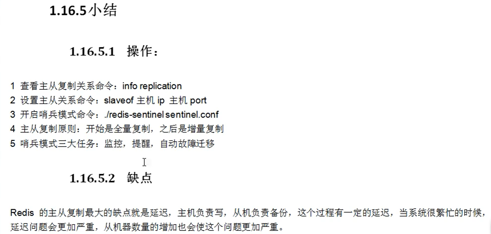

主从复制：
主机数据更新后根据配置和策略，自动同步到从机的master/slave机制，Master以写为主，Slave以读为主。
一般是主少从多，主负责写（可以读），从负责读（不能写），主写同步复制到从。
一主二从：
一主二从原理：
1、配从（库）不配主（库）
2、配从（库）：slaveof 主库IP 主库端口号
3、主写从读、读写分离
搭建一主二从：
1、搭建三台redis服务：使用一个redis模拟三台redis服务
提供三分redis配置文件：redis6379.conf、redis6380.conf、redis6381.conf
2、修改三份配置文件：以redis6379为例子
port 6379
pidfile ~/redisLog/redis_6379.pid
logfile "6379.log"
dbfilename dump6379.rdb
3、分别使用三个Redis配置文件，启动三个redis服务：
redis-server redis6379.conf &
redis-server redis6380.conf &
redis-server redis6381.conf &
4、通过redis客户端分别连接三台redis服务：
redis-cli -p 6379
redis-cli -p 6380
redis-cli -p 6381
5、查看三台redis服务在集群中的主从角色：
info replication
默认情况下，所有的redis服务都是主机，即能读也能写，但是都还没有从机，三台redis服务互相独立，互不影响。
6、设置主从关系：设从不设主
在6380上执行：slaveof 127.0.0.1 6379
在6381上执行：slaveof 127.0.0.1 6379
7、全量复制：一旦主从关系确定，会自动把主机上已有的数据同步复制到从库。
在6380和6381上执行：keys *
8、增量复制：主写数据会自动同步到从库。
在6379上执行：set k2 v2
在6380和6381上执行 keys *
9、主写从读，读写分离：
在6380和6381上执行：set k3 v3 ====>报错
10、主机宕机：从机原地待命
关闭6379服务：redis-cli -h 127.0.0.1 -p 6379 shutdown
查看6380和6381服务的主从角色： info replication ：从机仍然从属于主机，但是master_link_status:down（连接状态变为了down）
11、主机恢复、一切恢复正常：
重启6379服务：redis-server redis6379.conf &
从机状态变为了：master_link_status:up（连接状态恢复）
12、从机宕机、主机少一个从机，其他从机不变
关闭6380服务：redis-cli -h 127.0.0.1 -p 6380 shutdown
查看6379服务的主从角色：info replication
查看6381服务的主从角色：info replication
13、从机恢复、需要重新设置从属关系：
重启6380服务：redis-server redis6380.conf &
客户端连接6380：redis-cli -h 127.0.0.1 -p 6380
查看6380服务的主从角色：info replication（6380变为了主机，不是从机了）
在6380上执行：slaveof 127.0.0.1 6379 重新设置从属关系
14、从机上位：
1、主机宕机、从机原地待命：
关闭6379服务：redis-cli -h 127.0.0.1 -p 6379 shutdown
查看6380和6381的主从角色： info replication ：从机仍然从属于主机，但是master_link_status:down（连接状态变为了down）
2、从机断开原来的主从关系：
在6380上执行：slaveof no one
查看6380服务的主从角色：info replication（变为了主机）
重新设置主从关系：
在6381上执行：slaveof 127.0.0.1 6380
15、之前的主机恢复，变成了孤家寡人
重启6379服务：redis-server redis6379.conf &
客户端连接6379：redis-cli -h 127.0.0.1 -p 6379
16、将源主机6379设置为从机6381的从机（弟中弟）
在6379上执行：slaveof 127.0.0.1 6381
现在6381即是从机又是主机，但是还是不能写数据，有从角色的服务都不可以写。
小结：一台主机配置多台从机，一台从机又可以配置多台从机，从而形成一个庞大的集群结构。减轻一台主机上的压力，但是增加了服务之间的延迟时间。
redis哨兵模式：主机宕机、从机上位的自动版。
哨兵模式原理：从机上位的自动版。Redis提供了哨兵的命令，哨兵命令是一个独立的进程，哨兵通过发送命令来监控主从服务器的运行状态，如果检测到master故障了根据投票数自动将一个slave转换为 master,然后通过消息订阅模式通知其他slave，让他们切换主机。然而，一个哨兵进程对redis服务器进行监控，可能会出现问题，因此，可以使用更多的哨兵进行监控。
1、搭建一主二从集群架构：（上述前五步）
2、提供哨兵配置文件：
在redis安装目录下创建配置文件：redis_sentinel.conf
3、编辑哨兵配置文件：
sentinel monitor dc-redis 127.0.0.1 6379 1，
表示：指定监控主机的ip地址，post端口，得到哨兵的投票数（当哨兵投票数大于或者等于此数时切换主从关系）。
投票数表示哪个从机的投票数先达到指定票数，哪个从机就上位。
投票机制最后投出的主机和各个机器的性能有关，一般设置的投票数越少上位越快。
默认的哨兵配置文件：sentinel.conf
4、新开窗口，启动哨兵
redis-sentinel 哨兵配置文件目录
5、主机宕机
关闭6379服务；
哨兵程序自动选择从机上位。
6、之前的主机恢复：
重启6379服务；
哨兵让其自动从属于新的主机。
